السمكة أوّلاً
سمكة نهريّة عريضة الجسم، دهنها موزّع في اللحم لا متكتّل — وهو ما يُذيبه الجمر ببطء فيَسقي اللحم من داخله. تُفتح من الظهر وتُترك بقشرتها: القشرة هي الصحن الذي يُطبخ فيه. ثم تُدهَن بخليط الكركم والثوم والكمّون.
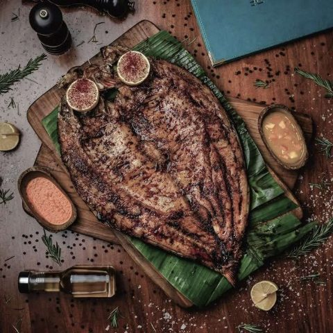
٠١ — الاسم
«هوى» في العربيّة بابٌ ذو وجهين: الحُبّ الذي يشدّك إلى شيء لا تملكه، والهواء نفسه — النسمة التي تحمل الرائحة قبل أن تراها. والاسم يقصد المعنيين: شوقٌ إلى بغداد، وهواءٌ منها.
وهذا ما يحدث على المائدة البغداديّة فعلاً. لا يبدأ الطبق بالنظر إليه، بل برائحة تصل قبله: دخان النار تحت السمك، وعجينٌ يلتصق بجدار التنّور، ودهنٌ حُرّ يُسكب على البامية فيُعلن عن نفسه من الغرفة المجاورة.
لا نقدّم «أكلاً عراقياً» في قطر. نحاول نقل الهواء نفسه.
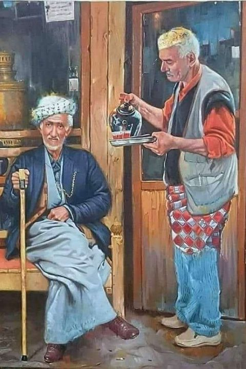
٠٢ — الأجواء
توازنٌ مقصود بين القديم والحديث: بلاط مزخرف، وأقمشة منسوجة، وإضاءة معاصرة. مواد حقيقيّة بحرفة حقيقيّة — لا «ثيمة».
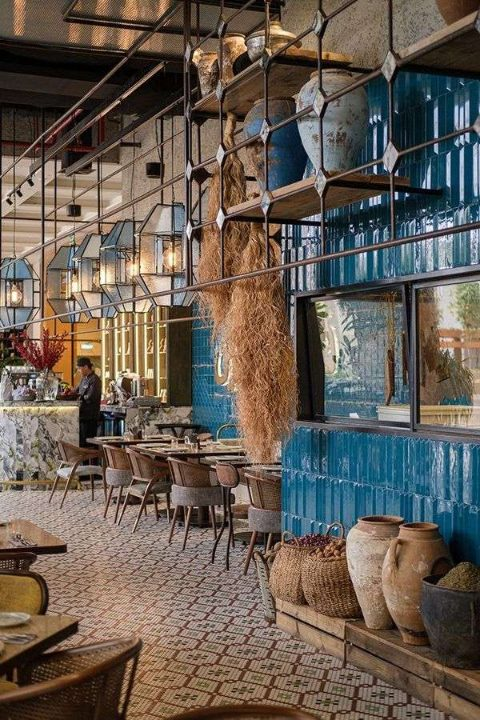
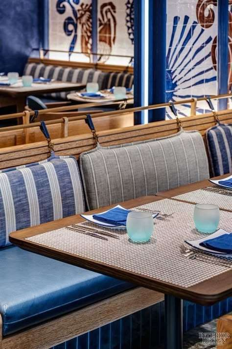
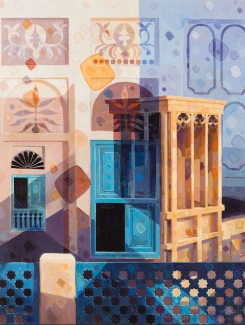
٠٣ — الطبق الذي لا يُفوَّض
ليس «سمكاً مشوياً» بل طريقة: تُفرش السمكة مفتوحةً مواجهةً للجمر، فتُطبخ بالحرارة المنعكسة لا بالتلامس. ولهذا لا تُسرَّع.
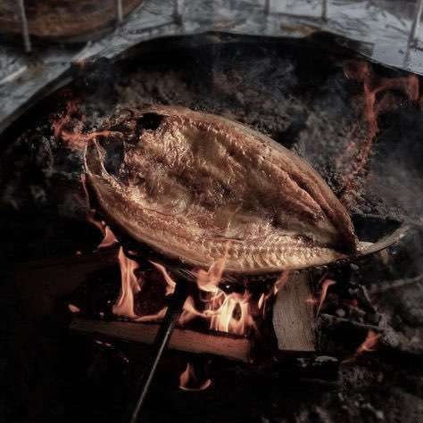
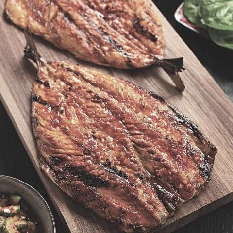
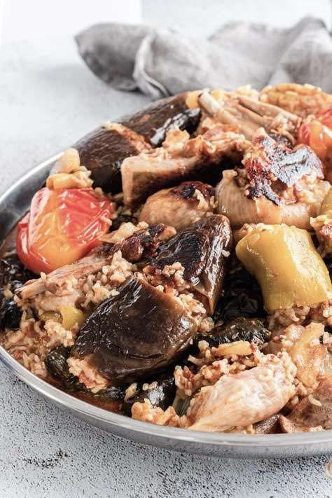
سمكة نهريّة عريضة الجسم، دهنها موزّع في اللحم لا متكتّل — وهو ما يُذيبه الجمر ببطء فيَسقي اللحم من داخله. تُفتح من الظهر وتُترك بقشرتها: القشرة هي الصحن الذي يُطبخ فيه. ثم تُدهَن بخليط الكركم والثوم والكمّون.
يُترك الحطب حتى يسكن لهبه ويصير جمراً أحمر. الشيّ على اللهب يُحرق السطح قبل أن ينضج الداخل، وهذا أشيع خطأ في المسكوف.
تُسمَّر السمكة على أوتاد وتُنصب واقفةً حول الجمر لا فوقه — بينها وبين النار نحو شبر، فتطبخ بالحرارة المنعكسة وحدها. تُدار مرّة واحدة. والمدّة بين ٤٥ و٦٠ دقيقة، ولا تُقصَّر مهما كان الطلب.
تنزل على صينيّة واسعة كما هي، ويُحيط بها صلصة الطحينة والتمن المُبخَّر والبصل والطماطم المشويّة والليمون. لا تُقسَّم حصصاً في المطبخ. المائدة تُوضع، والأيدي تقتسم.
٠٥ — الضيافة
في بغداد لا يُقال للضيف «هل تريد شاياً؟» — يُوضع أمامه. نحتفظ بهذه العادة كما هي: استكان بعد الأكل، ضيافةً لا بنداً في الفاتورة.
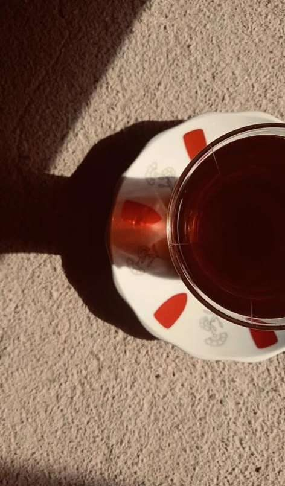
٠٦ — الهويّة التطبيقيّة
الهويّة لا تنتهي عند الشعار. هذه تطبيقاتها على ما يحمله الضيف ويلمسه.
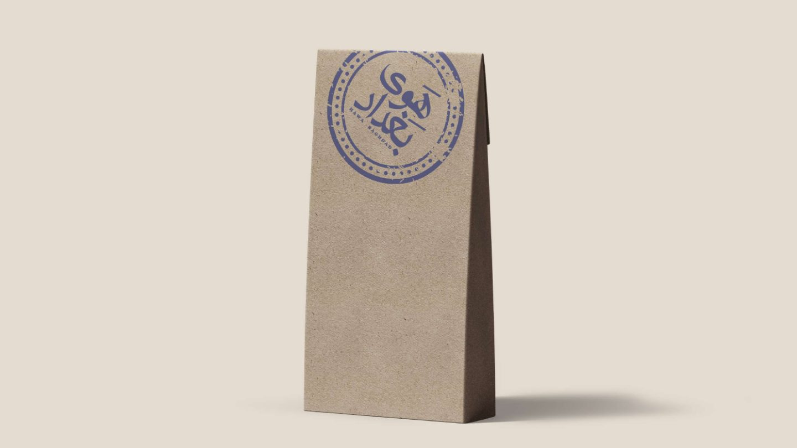
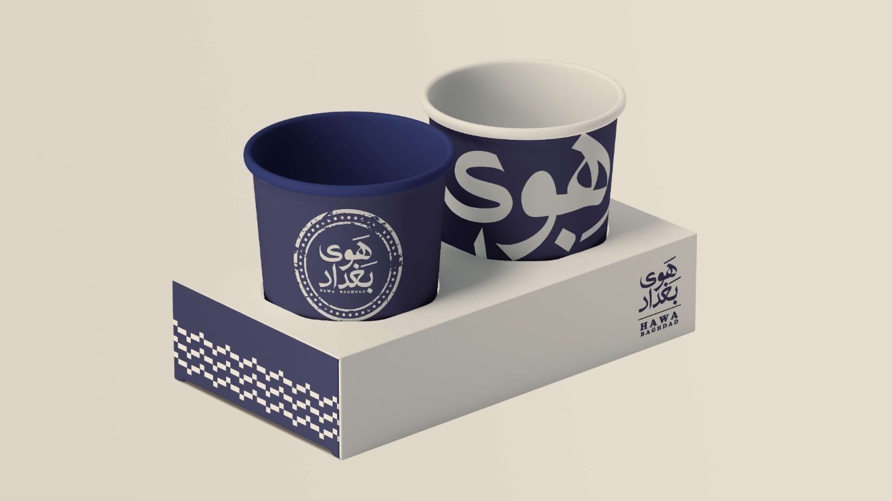
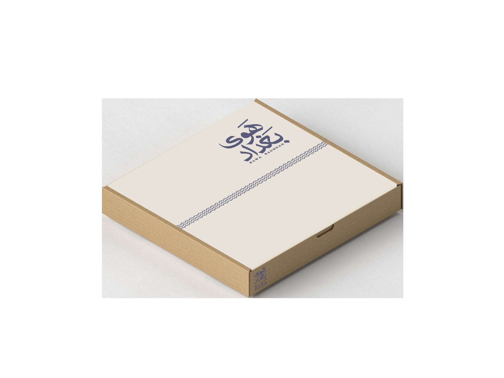
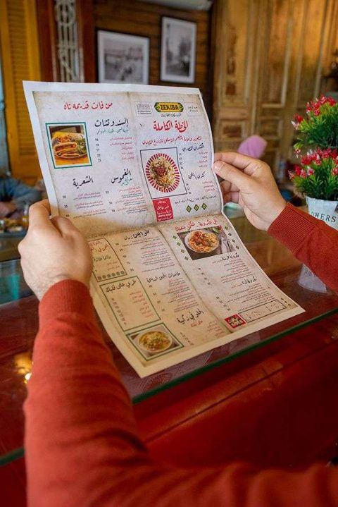
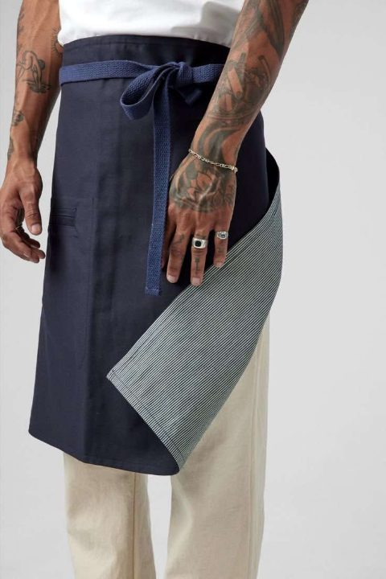
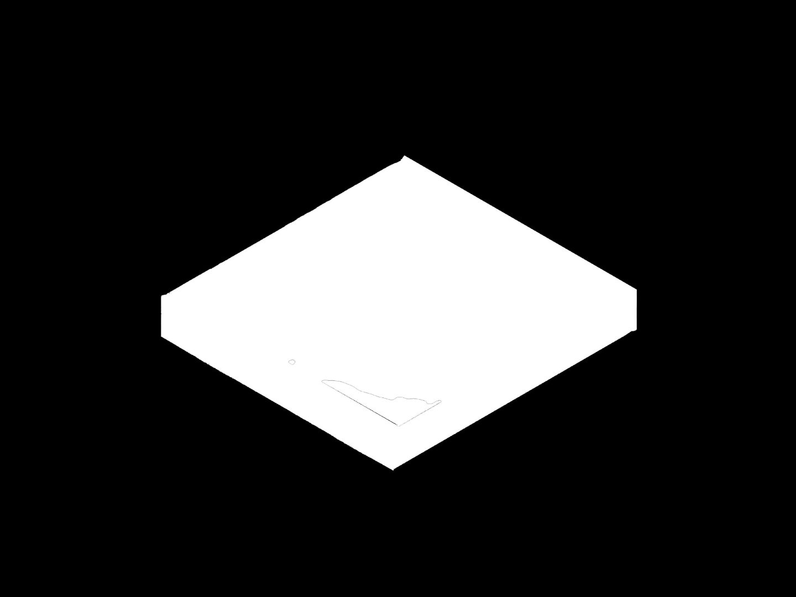
٠٧ — المرجع
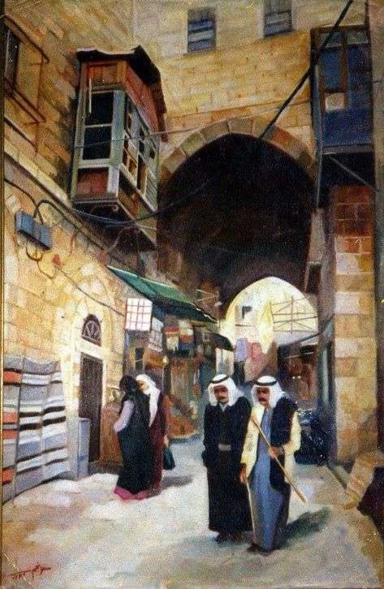
أزقّة بغداد القديمة: الظلّ والضوء يتبادلان على الطريق.
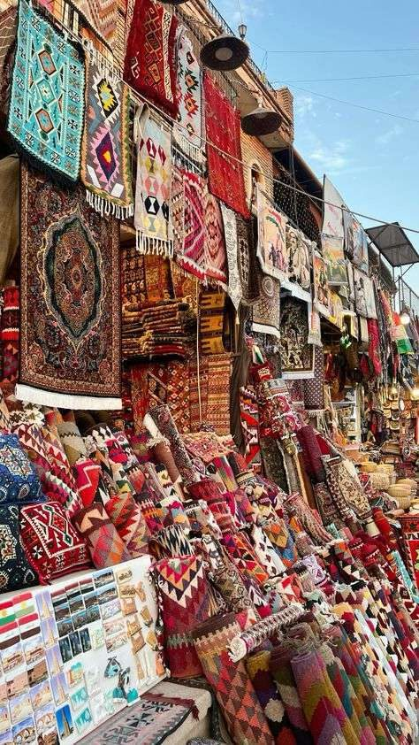
الأقمشة المنسوجة التي تذكرها الهويّة في وصف المكان.
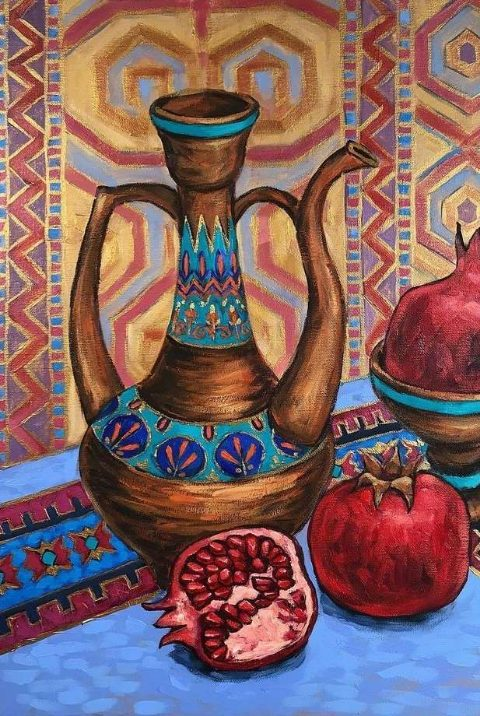
آنية الطين — ومنها جاء الطيني في لوحة الألوان.
القاشاني لا يبقى على الجدار: ينزل إلى المائدة.
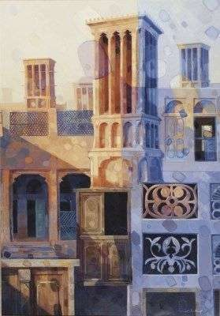
القوس البغدادي المدبّب، وهو مرجع تخطيط الصالة.
٠٧ — أين المشروع الآن
«هوى بغداد» مفهومٌ مكتمل لم يُنفَّذ بعد. هذه الصفحة تعرضه كما هو — بلا عنوان وهمي ولا صور لمكان غير موجود.
تحديد الفكرة ومرجعها البصري والمائدة المقترحة وتصوّر المكان. مكتمل — وهو ما تقرأه في هذه الصفحة.
اختيار الموقع في الدوحة، والتفاوض، والتراخيص البلديّة والصحيّة — ورخصة الفرن المكشوف والتنّور تحديداً.
بناء التنّور ومحلّ المسكوف، واستقدام شيف بغدادي، وتثبيت وصفات المائدة بالتجربة لا بالورق.
تنفيذ الشناشيل والطابوق، ثم تصوير احترافي مكلَّف خصّيصاً للمكان والأطباق الحقيقيّة — تحلّ محلّ الرسوم في هذه الصفحة.
وعندها فقط يُضاف العنوان ورقم الحجز وساعات العمل، ويتحوّل هذا الموقع من صفحة مفهوم إلى موقع مطعم يعمل.
المشروع مفتوح للنقاش مع أصحاب العقارات والمجمّعات والمستثمرين المهتمّين بمطبخ عراقي جادّ في قطر. يُتاح ملف المشروع الكامل — الدراسة والتكاليف والجدول الزمني — عند الطلب.
data-tbd.
+974 0000 0000
[رقم التواصل والواتساب]
[البريد الإلكتروني]
٠٨ — أسئلة